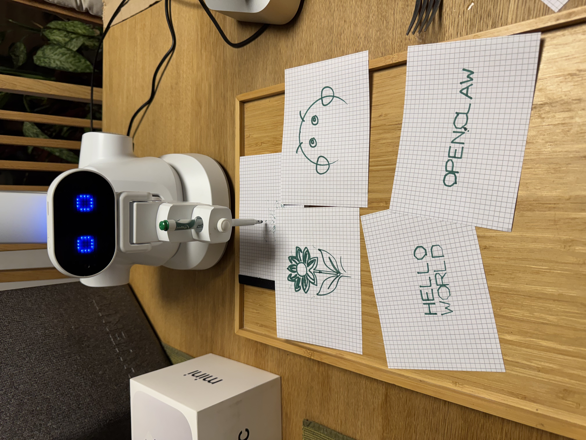

Architecture
Compiled RobotRoss knowledge page generated from RobotRoss source code, architecture notes, and operational documentation.
Contents

Architecture
1. Overview
RobotRoss combines customer-facing input channels, an orchestration layer, local and cloud model components, the Huenit robot arm, and studio recording/output systems. The ATF architecture page should describe that operational chain first, then show how the ATF wraps it into a live technical file.
2. System Flow
- Input channels: Shopify orders, Telegram or scripted commands, and the live voice showcase.
- Conversation and control:
chat_ross.pyhandles interactive voice sessions, whilebob_ross.pyacts as the main orchestrator forwrite,draw,svg,sketch,check, andcalibrate. - Model path: Claude Haiku 4.5 is used for control/commerce-side reasoning, while Apertus 8B via Ollama is used for local narration and parsing tasks. Some voice/TTS flows also reference Kokoro, Voxtral, and system fallback engines depending on runtime mode.
- Execution layer: Huenit control scripts convert text, sketches, or SVGs into G-code streamed to the robot arm.
- Studio output: OBS records the drawing session, order data is written into the ledger, and customer-facing proof/output is produced from that recorded session.
3. RobotRoss Architecture Layers
| Layer | Component | Description |
|---|---|---|
| Input | Shopify, Telegram, Voice Showcase | Human prompts, uploaded designs, or spoken requests enter through commerce, messaging, or live demo channels. |
| Control | chat_ross.py + bob_ross.py | Interactive session handling and the main job orchestrator decide what the robot should do next. |
| Models | Claude Haiku 4.5, Apertus 8B, Whisper, Kokoro/Voxtral | Planning, narration, STT, and spoken output are split across purpose-specific model components. |
| Execution | Huenit scripts + robot arm | SVG conversion, drawing, calligraphy, calibration, and pyrography are executed against the physical arm. |
| Output | OBS, order ledger, shipped artwork | Sessions are recorded, logged, linked back to the customer journey, and turned into video proof and physical delivery. |
4. Diagram
Shopify / Telegram / Voice
|
v
chat_ross.py / bob_ross.py
|
v
Claude Haiku / Apertus / Whisper / TTS
|
v
huenit_write / huenit_draw / huenit_svg
|
v
Huenit robot arm
|
v
OBS / order ledger / video proof
5. ATF Overlay
The ATF is layered over the live RobotRoss system rather than replacing it:
- the compiled wiki explains the intended architecture and subsystem behavior
- the operational ledger captures what actually happened in production logs
- the local query path lets an operator inspect the system on the local machine
- the voice interface sits on top of the same evidence-backed query layer
6. Four-Layer ATF Surface
| Layer | Component | Description |
|---|---|---|
| Layer 1 | Compiled Wiki | Structured knowledge pages distilled from docs, code, and architecture notes. |
| Layer 2 | Operational Ledger | Normalized production evidence built from raw RobotRoss log streams. |
| Layer 3 | Local Q&A | A local model interface for answering questions over the wiki and ledger without cloud dependency. |
| Layer 4 | Voice Interface | Optional speech loop using Whisper for STT and Voxtral for spoken responses. |
7. Key Runtime Components
- Voice showcase:
listen.pyperforms Whisper STT with VAD,chat_ross.pyhandles the conversation loop, and spoken confirmations can trigger drawing in the background. - Main orchestrator:
bob_ross.pyperforms readiness checks, locking, generation, narration, draw execution, and cleanup. - Drawing pipeline:
huenit_write.py,huenit_draw.py,huenit_svg.py, and sketch composition utilities convert requests into robot motion. - Audio/TTS: the architecture sources mention Kokoro as the primary local neural TTS path, Voxtral for higher-end spoken output, and system-level fallback voices.
- Studio and proof: OBS captures the run, while the order ledger tracks received time, buyer, content, status, and produced video links.
8. Wall of Fame Operating Model
- The commercial target is a 10×10 Wall of Fame with 100 slots.
- A customer buys a slot, submits a prompt or design, the system dispatches the job, RobotRoss draws it live, proof is recorded, and the physical artwork is shipped.
- This commercial journey matters for the ATF because the technical file must explain not only the robot motion, but also the customer-facing intake and proof chain.
9. Notes and Open Points
- The two source architecture documents describe the same system but emphasize different layers: one is voice-showcase and orchestrator centric, the other is end-to-end commerce/studio centric. The ATF page intentionally merges both views.
- TTS references are not fully aligned across the documents: one source emphasizes Kokoro plus system fallbacks, while another also calls out Voxtral. The ATF should present these as runtime variants rather than contradictory claims.
- Some model assignments are mode-specific. Claude Haiku 4.5 appears in control and commerce flows, while Apertus 8B is the local narration/default local reasoning path.
- The compiled wiki still depends on the quality and coverage of the ingested source corpus, so this page should keep being refreshed when the RobotRoss architecture docs change.